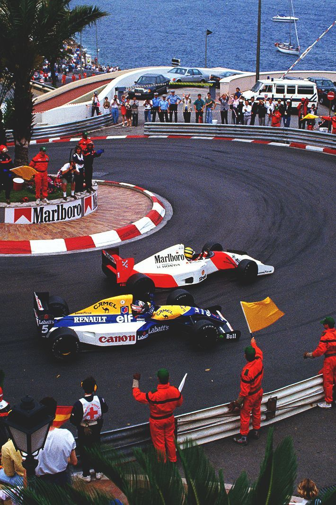
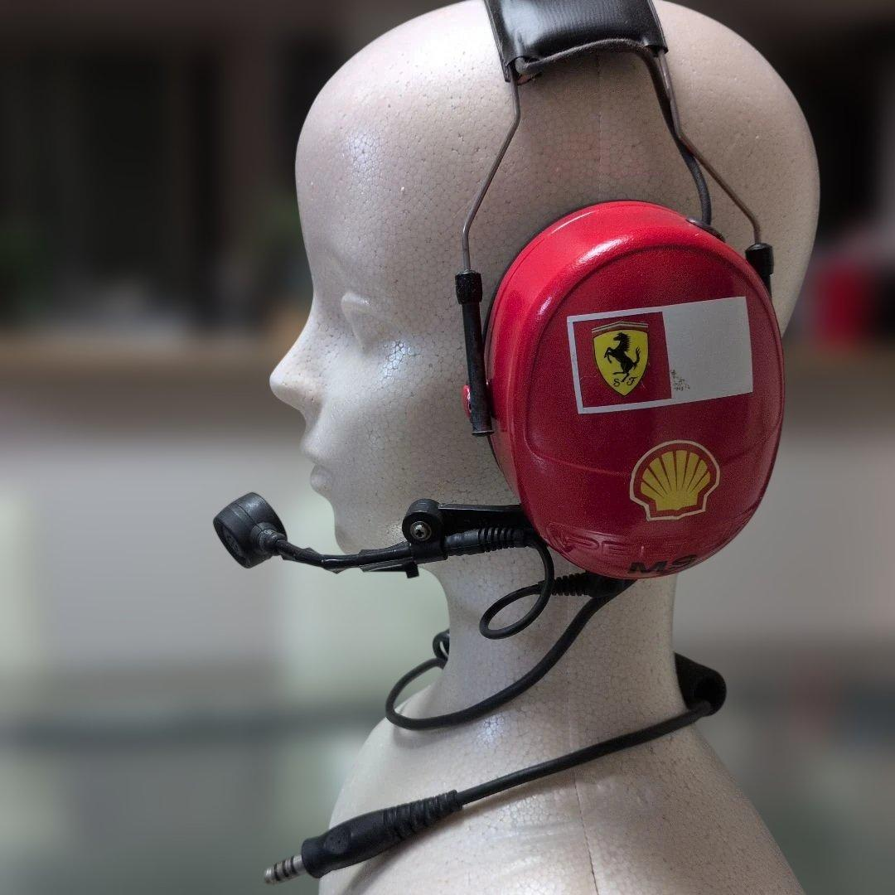
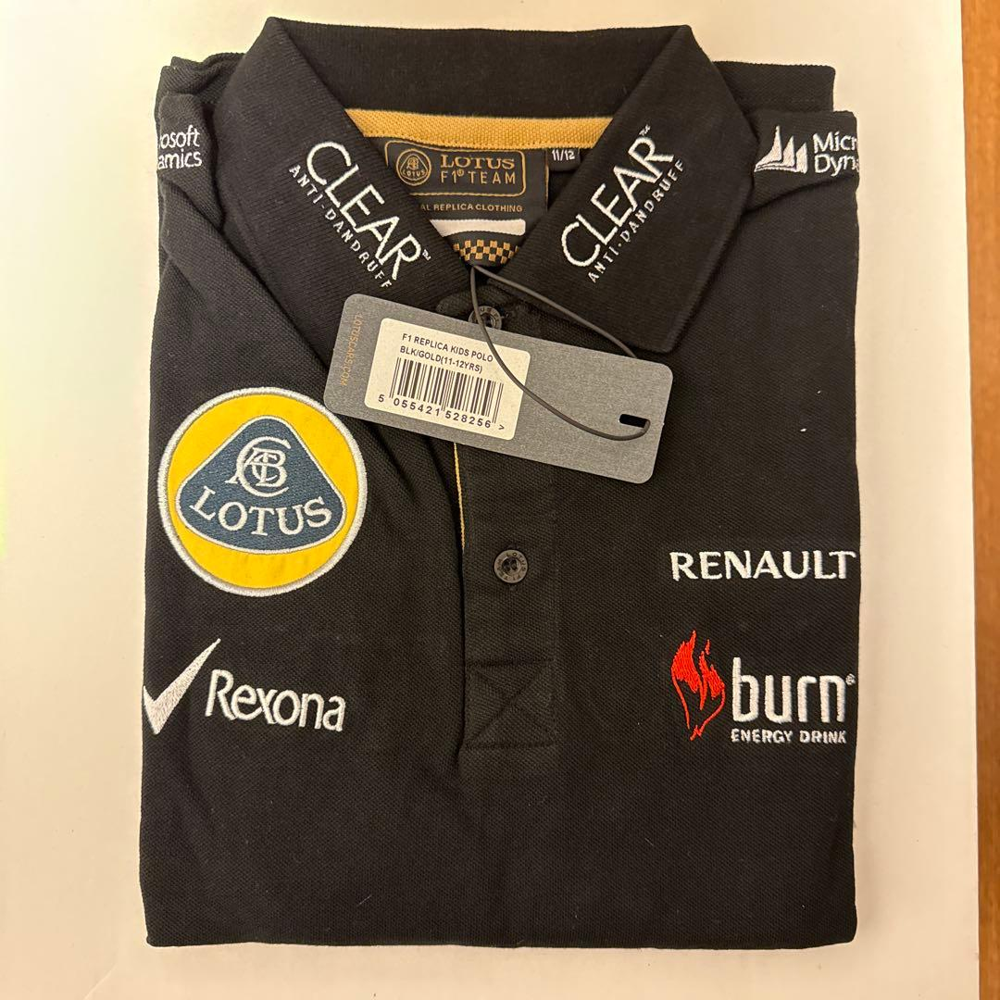
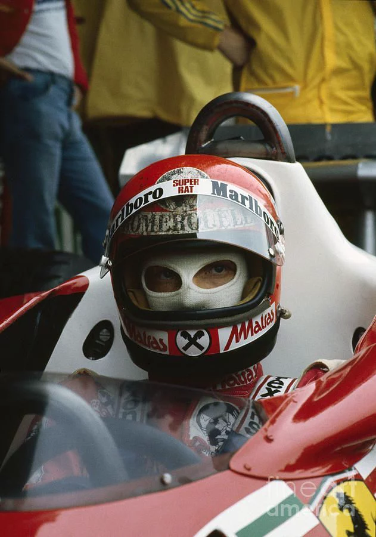
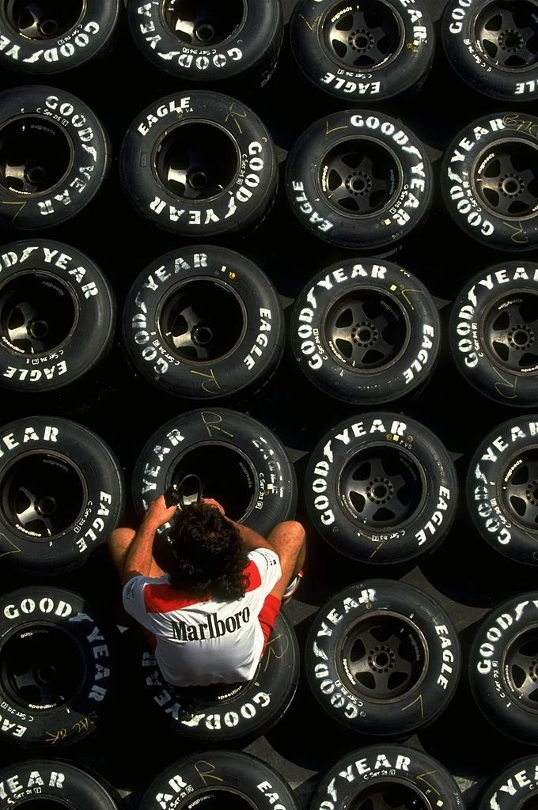
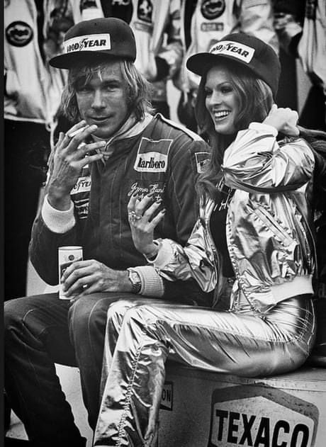
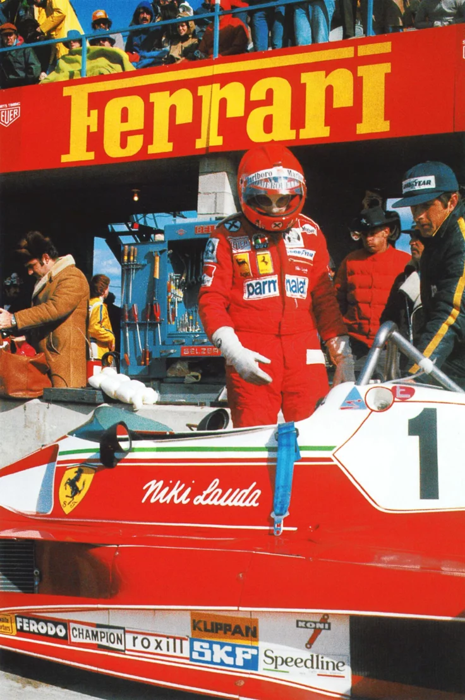

Garimpo no Japão
Em nosso grupo, enviamos uma curadoria única de artigos novos e seminovos anunciados no Japão. Bonés de equipes, itens de Grand Prix e colecionáveis que marcaram época. De colecionador para colecionador.

Bonés, camisetas, jaquetas e colecionáveis garimpados à mão no Japão. Esta é a peça em destaque no grupo agora, com uma amostra do que mais está passando por lá.

Boné oficial de coleção do Michael Schumacher, da era de ouro dele na Ferrari. Na frente, o logo do patrocinador pessoal DEKRA com os louros bordados; na lateral, "Ferrari", a bandeira da Alemanha e a assinatura bordada do Schumacher. Detalhe honesto: falta um pino do ajuste snapback atrás, mas a regulagem e o uso seguem normais, e o tecido está sem desbotes ou manchas à vista.





Frete internacional e impostos por nossa conta, com entrega rápida e rastreável para todo o Brasil.
Curadoria na origem, importação por logística própria e entrega no Brasil do seu jeito.
Em nosso grupo, enviamos uma curadoria única de artigos novos e seminovos anunciados no Japão. Bonés de equipes, itens de Grand Prix e colecionáveis que marcaram época. De colecionador para colecionador.
Despachamos seu pedido para o Brasil junto a outras encomendas do grupo através de logística própria. Cada peça chega conferida, fotografada e com a história registrada.
Ao recebermos a remessa, você pode retirar conosco ou optar por um envio via Correios ou transportadora de sua preferência.
Da Fórmula 1 clássica ao automobilismo de hoje. São várias eras diferentes, cada uma com as suas peças. Não é só coisa antiga.
O clima que guia a curadoria. Fotografias que marcaram o automobilismo e definem o olhar da Nippon Speed Co.




Curadoria semanal de memorabilia de F1 e automobilismo, direto do Japão. Só as peças que valem a pena e a chance de fechar primeiro.
Entrar no grupo